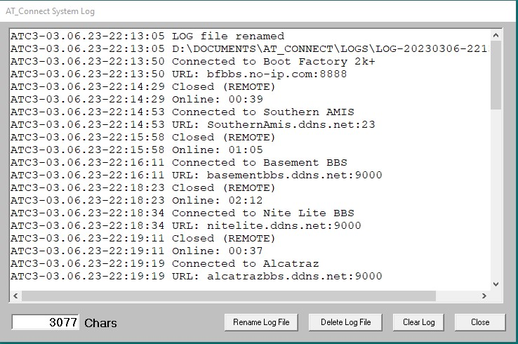

System Log

The System Log can optionally be used to keep track of your BBS activity. The number of characters in the current log is displayed at the bottom of the form. While the log cannot be edited anywhere in AT_Connect, several things can be done to it here in this form:
- It can be cleared and restarted here.
- It can be deleted and optionally turned off for this session.
- It can be renamed and saved (like an archive function). It automagically assigns a "unique" filename based on the time and date rounded to the nearest second and stores it in the LOGS folder which is created the first time you use it.
It can be permanently disabled in the configuration menu.
The log file is located in the System folder and is called 'AT3_Log.txt'.
The time value is stored as a long integer in the BBS List for each BBS. This means it will roll over at some point...when you reach 69 years of time online.